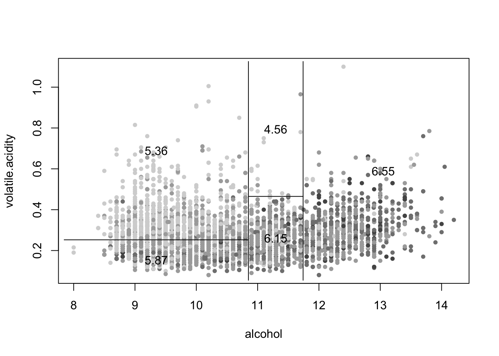

6.3 Tree-Based Regression Models in R
The Python version of this section can be found here: Python Code for Regression Trees . It replicates (in spirit) the work that is done in this section. It also comments on differences between the two languages.
The whitewines.csv data set contains information on white variants of the Portuguese “Vinho Verde” wine.
The columns are:
(a) fixed acidity,
(b) volatile acidity,
(c) citric acid,
(d) residual sugar,
(e) chlorides,
(f) free sulfur dioxide,
(g) total sulfur dioxide,
(h) density,
(i) pH,
(j) sulphates,
(k) alcohol,
(l) quality (score between 0 and 10).
The data set can be downloaded here: whitewines.csv
## fixed.acidity volatile.acidity citric.acid residual.sugar chlorides
## 1 7.0 0.27 0.36 20.7 0.045
## 2 6.3 0.30 0.34 1.6 0.049
## 3 8.1 0.28 0.40 6.9 0.050
## 4 7.2 0.23 0.32 8.5 0.058
## 5 7.2 0.23 0.32 8.5 0.058
## 6 8.1 0.28 0.40 6.9 0.050
## free.sulfur.dioxide total.sulfur.dioxide density pH sulphates alcohol
## 1 45 170 1.0010 3.00 0.45 8.8
## 2 14 132 0.9940 3.30 0.49 9.5
## 3 30 97 0.9951 3.26 0.44 10.1
## 4 47 186 0.9956 3.19 0.40 9.9
## 5 47 186 0.9956 3.19 0.40 9.9
## 6 30 97 0.9951 3.26 0.44 10.1
## quality
## 1 6
## 2 6
## 3 6
## 4 6
## 5 6
## 6 6## [1] 4898 12
Two R packages fit tree models here: tree and rpart. We use tree only for partition.tree, which produced the first figures in the notes. The remaining code uses rpart.
A Simple Regression Tree
In R we use the tree package for this two-predictor illustration.
The syntax for tree is similar to that for a linear model. For illustration, predict quality from alcohol and volatile.acidity only.
Fit the tree:
## node), split, n, deviance, yval
## * denotes terminal node
##
## 1) root 4898 3841.00 5.878
## 2) alcohol < 10.85 3085 1845.00 5.606
## 4) volatile.acidity < 0.2525 1475 868.00 5.873 *
## 5) volatile.acidity > 0.2525 1610 775.30 5.361 *
## 3) alcohol > 10.85 1813 1378.00 6.341
## 6) alcohol < 11.7417 881 670.00 6.121
## 12) volatile.acidity < 0.465 865 616.50 6.150 *
## 13) volatile.acidity > 0.465 16 13.94 4.562 *
## 7) alcohol > 11.7417 932 624.70 6.549 *Plot the tree:
The corresponding rectangular partition of the two-dimensional feature space is
quality.quantiles = cut(whitewines$quality, unique(quantile(whitewines$quality,
0:5/5)), include.lowest = TRUE)
plot(whitewines$alcohol, whitewines$volatile.acidity, col = grey(5:1/6)[quality.quantiles],
pch = 20, ylab = "volatile.acidity", xlab = "alcohol")
partition.tree(quality.tree, ordvars = c("alcohol", "volatile.acidity"),
add = TRUE)
prune.tree shrinks the tree to a chosen number of leaves:
## node), split, n, deviance, yval
## * denotes terminal node
##
## 1) root 4898 3841.0 5.878
## 2) alcohol < 10.85 3085 1845.0 5.606
## 4) volatile.acidity < 0.2525 1475 868.0 5.873 *
## 5) volatile.acidity > 0.2525 1610 775.3 5.361 *
## 3) alcohol > 10.85 1813 1378.0 6.341
## 6) alcohol < 11.7417 881 670.0 6.121 *
## 7) alcohol > 11.7417 932 624.7 6.549 *Detach tree before moving to rpart so that the two plot methods do not clash.
Fitting and Pruning a Regression Tree
In R we use rpart. The syntax for rpart is again the usual formula interface. The default plot is plain; rpart.plot is easier to read.
set.seed(598)
wine.tree1 = rpart(quality ~ ., data = whitewines)
par(mfrow = c(1, 2))
plot(wine.tree1)
rpart.plot(wine.tree1)
Unlike the tree example, this fit uses every predictor.
Reading the Tree
Read the rpart.plot from the root down. The root prints the mean of quality over the whole sample and \(100\%\) of the rows. The first split is on alcohol. The left child holds the lower-alcohol rows and a lower mean; the right child holds the rest. Leaves sit at the bottom; their shading tracks the size of the prediction. Exact means and percentages will match the printed tree for this data set and this rpart version.
6.3.1 Cross-validation and the CP Table
Cross-validation is built into rpart. Use printcp to inspect the pruning table.
CP is the complexity parameter, a scaled version of \(\alpha\) – the price of a leaf.
##
## Regression tree:
## rpart(formula = quality ~ ., data = whitewines)
##
## Variables actually used in tree construction:
## [1] alcohol density free.sulfur.dioxide
## [4] volatile.acidity
##
## Root node error: 3841/4898 = 0.7842
##
## n= 4898
##
## CP nsplit rel error xerror xstd
## 1 0.161007 0 1.00000 1.00030 0.021275
## 2 0.052469 1 0.83899 0.84260 0.020094
## 3 0.027342 2 0.78652 0.79453 0.019601
## 4 0.017711 3 0.75918 0.76429 0.018478
## 5 0.010355 4 0.74147 0.75134 0.018065
## 6 0.010000 6 0.72076 0.74656 0.017995
In the output above:
nsplitis the number of splits. The number of leaves isnsplit + 1.rel erroris the training RSS of that subtree, divided by the RSS of the root.xerroris the same quantity estimated by cross-validation (also relative to the root).xstdis the standard error ofxerror.
cp is a scaled version of the penalty \(\alpha\) from cost-complexity pruning. If \(T_0\) denotes the root and \(R(T)\) is RSS, rpart uses
\[R_{\mathrm{cp}}(T) = \frac{R(T)}{R(T_0)} + \mathrm{cp}\,|T|. \]
That is the same criterion as \(R_{\alpha}(T)=R(T)+\alpha|T|\) with
\[ \mathrm{cp} = \frac{\alpha}{R(T_0)}. \]
(The constant that distinguishes a penalty on leaves from a penalty on splits does not change which subtree is optimal for a given \(\mathrm{cp}\).)
In the cptable, when nsplit increases by one from row \(i\) to row \(i+1\),
\[\texttt{rel error}_i - \texttt{rel error}_{i+1}=\texttt{CP}_i.\]
That difference is the drop in relative RSS from the extra split. It is the largest \(\mathrm{cp}\) for which that split is still worth keeping on the training data. Cross-validation (xerror) is what we use to decide whether the split is worth keeping for prediction.
Pruning
prune returns a subtree for a chosen cp:
## n= 4898
##
## node), split, n, deviance, yval
## * denotes terminal node
##
## 1) root 4898 3840.99 5.877909 *## n= 4898
##
## node), split, n, deviance, yval
## * denotes terminal node
##
## 1) root 4898 3840.99 5.877909 *## n= 4898
##
## node), split, n, deviance, yval
## * denotes terminal node
##
## 1) root 4898 3840.990 5.877909
## 2) alcohol< 10.85 3085 1844.906 5.605511 *
## 3) alcohol>=10.85 1813 1377.659 6.341423 *The CV path:
If the default tree looks too small to have reached the CV minimum, grow a larger tree by setting cp = 0:
wine.tree2 = rpart(quality ~ ., data = whitewines, control = list(cp = 0,
xval = 10))
plot(wine.tree2)

Optimal CP Value
Choose \(\mathrm{cp}\) by the minimum cross-validation error or by the one-standard-error (1-SE) rule.
# Index of CP with lowest xerror
optimal.cp = which.min(wine.tree2$cptable[, "xerror"])
# The optimal CP value (column 'xerror')
wine.tree2$cptable[optimal.cp, 4]## [1] 0.6961474# upper bound for equivalent optimal xerror
wine.tree2$cptable[optimal.cp, 4] + wine.tree2$cptable[optimal.cp,
5]## [1] 0.713746# smallest tree whose xerror is within one SE of the
# minimum
tmp.id = which(wine.tree2$cptable[, 4] <= wine.tree2$cptable[optimal.cp,
4] + wine.tree2$cptable[optimal.cp, 5])
tmp.id = min(tmp.id)
# CP.1se: midpoint of the cp values on either side of that
# row
CP.1se = (wine.tree2$cptable[tmp.id - 1, 1] + wine.tree2$cptable[tmp.id,
1])/2
# Prune tree with CP.1se
wine.tree3 = prune(wine.tree2, cp = CP.1se)The identity between column 1 (CP) and the adjacent drops in column 3 (rel error) is the same one stated after printcp. The commented line below checks it numerically.
After the tree is fit, predict() (the predict.rpart method) produces fitted values on new or existing rows.